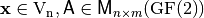
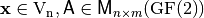
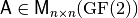
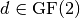
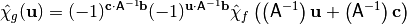
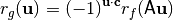

Affine function and affine equivalence¶
Description¶
A Boolean linear function is defined as a Boolean function consisting only of the sum of single input variables. Similarly, the set of Boolean affine functions is defined as the set of linear functions and their complements. A mathematical description of the linear and affine Boolean functions is given as follows.
A Boolean linear function is defined as the sum of a subset of the input variables, denoted  where .
where .
The set of Boolean affine functions are the linear functions and their complements, denoted where .
An affine Vector Boolean function is defined in terms of a linear Vector Boolean function and a dyadic shift. A linear Vector Boolean function involves the multiplication of the input vector by a Boolean matrix. A dyadic shift (or translation) involves the complement of a subset of input bits. As such, an affine Vector Boolean function may be defined as the combination of a linear Vector Boolean function and dyadic shift. A mathematical description of the linear and affine Vector Boolean functions is given as follows.
A Vector Boolean function  defined as with  and so that if
defined as with  and so that if  then F is linear and if then F is affine.
then F is linear and if then F is affine.
Affine equivalence of Boolean functions¶
Equivalence classes provide a powerful tool in both the construction and analysis of Boolean functions for cryptography. In particular, rather than considering the entire space of  functions a reduced view can be found in the consideration of only one function from each equivalence class.
functions a reduced view can be found in the consideration of only one function from each equivalence class.
If
where  non-singular, and  and it is an affine transformation. The functions f and g satisfying the previous equation are called equivalent under the action of .
Of particular interest in the study of equivalence classes is the effect of the affine transformation on the algebraic degree, the Walsh Spectrum and Autocorrelation Spectrum of a Boolean function.
Frequency distribution of absolute values of Walsh Spectrum¶
The effect of the application of an affine transformation to a Boolean function on the Walsh Spectrum is to rearrange the values and hence, the Walsh value distributions are invariant under all affine transformations [Preneel:93]:

Thus nonlinearity is also invariant under affine transformation.
Frequency distribution of absolute values of Autocorrelation Spectrum¶
The effect of the application of an affine transformation to a Boolean function on the Autocorrelation Spectrum is to rearrange the values and hence, the Autocorrelation value distributions are invariant under all affine transformations [Preneel:93]:

Thus absolute indicator is also invariant under affine transformation.
Library¶
A VBF class can be initialized for a affine Vector Boolean function giving its corresponding matrix and vector by the following method:
void putaffine(const NTL::mat_GF2& A,const NTL::vec_GF2& b)
The method used to obtain the Frequency distribution of the absolute values of the Walsh Spectrum is the following:
void printFWH(NTL_SNS ostream& s, VBF& F)
The method used to obtain the Frequency distribution of the absolute values of the Autocorrelation Spectrum is the following:
void printFAC(NTL_SNS ostream& s, VBF& F)
Example¶
The following program finds out the Walsh Spectrum, Frequency distribution of the absolute values of the Walsh Spectrum, Autocorrelation Spectrum, and Frequency distribution of the absolute values of the Autocorrelation Spectrum of a Vector Boolean function having as input the matrix  and the vector
and the vector  associated with an affine function where:
associated with an affine function where:
#include <iostream>
#include <fstream>
#include "VBF.h"
int main(int argc, char *argv[])
{
using namespace VBFNS;
VBF F;
NTL::mat_GF2 A;
NTL::vec_GF2 b;
ifstream input(argv[1]);
if(!input) {
cerr << "Error opening " << argv[1] << endl;
return 0;
}
input >> A;
input >> b;
F.putaffine(A,b);
input.close();
cout << "The Walsh Spectrum is:" << endl << Walsh(F) << endl << endl;
cout << "Frequency distribution of the absolute values of
the Walsh Spectrum:" << endl;
printFWH(cout,F);
cout << endl;
cout << "The Autocorrelation Spectrum is:" << endl << AC(F) << endl;
cout << "Frequency distribution of the absolute values of
the Autocorrelation Spectrum:" << endl;
printFAC(cout,F);
cout << endl;
return 0;
}
The output of the program would be the following:
The Walsh Spectrum is:
[[4 0 0 0]
[0 0 4 0]
[0 -4 0 0]
[0 0 0 -4]
]
Frequency distribution of the absolute values of the Walsh Spectrum:
(0,3),(4,1)
(0,3),(4,1)
(0,3),(4,1)
The Autocorrelation Spectrum is:
[[4 4 4 4]
[4 4 -4 -4]
[4 -4 4 -4]
[4 -4 -4 4]
]
Frequency distribution of the absolute values of the Autocorrelation Spectrum:
(4,4)
(4,4)
(4,4)